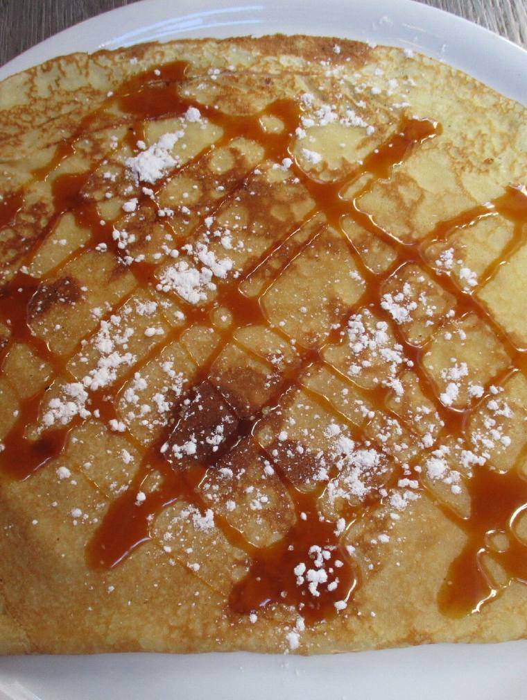

Desserts

Desserts
Crêpes
Préparation : 10 min
Cuisson : 30 min
Ingrédients (pour 4 personnes)
- 150 g de farine
- 2 œufs
- 40 cl de lait
- 1 pincée de sel
- beurre pour la poêle
- rhum, vanille ou fleur d’oranger (facultatif)
Quantités adaptées. Les temps de cuisson ne sont pas recalculés.
- Mettre farine et sel dans une terrine, incorporer les œufs jusqu’à une pâte lisse.
- Verser le lait froid peu à peu en fouettant, parfumer si on veut.
- Dans une poêle très chaude et beurrée, verser un peu de pâte et tourner pour l’étaler finement.
- Retourner quand le dessous est doré, cuire un instant. Beurrer entre deux crêpes.
D’après Le Voyage à Nantes, office de tourisme. Traduit et reformulé, verres convertis, beurre à la place de la margarine.